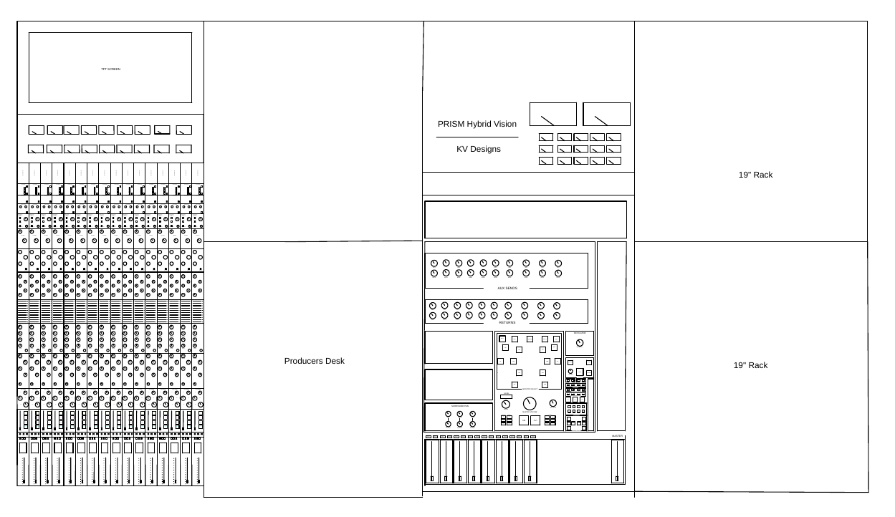

One Console. Analog Character. Digital Control.

PRISM Hybrid Vision is a hybrid digital/analog immersive sound mixing and mastering console designed around the needs of modern professional studios.
PRISM combines an analog audio path with digital control, automation, recall, and DAW integration. Its modular architecture allows compatible hardware modules to be replaced or upgraded without replacing the entire console.
The result is a console designed to preserve the character and flexibility of analog processing while providing the workflow advantages of a modern digital production environment.
WHY PRISM?
Designed Without Choosing Between Analog and Digital
Modular Architecture
PRISM is designed around replaceable hardware modules. Compatible channel and processing cards can be upgraded without requiring the entire console to be replaced.
Analog Signal Path
Analog processing remains at the center of the audio architecture, allowing the console to retain the characteristics of dedicated analog circuitry.
Digital Control
Recall, automation, routing, motorized faders, and DAW integration provide the precision and repeatability of a modern digital workflow.
Selectable Character
Switchable preamp, conversion, and output characteristics allow the console architecture to support different production approaches from a single platform.
KEY FEATURES
Built Around the Workflow
Hybrid Analog Paths
Analog processing combined with digital control and routing.
Full Digital Recall
Save and restore console settings for repeatable production workflows.
100 mm Motorized Faders
Physical control surfaces designed to work alongside automated DAW workflows.
Modular Cards
Replaceable hardware architecture designed for future expansion and experimentation.
Dual Compression
Each channel incorporates VCA and Opto compression stages within the channel architecture.
MADI Networking
High-channel-count digital audio connectivity for integration with professional studio systems.
Touchscreen Control
Centralized digital control for routing, processing, recall, and system configuration.
Immersive Audio
Architecture designed to support immersive production workflows including 9.2.6 monitoring.
CHANNEL ARCHITECTURE
From Input to Mix
AT A GLANCE
PRISM by the Numbers
DEVELOPMENT
From Architecture to Hardware
PRISM is being developed as a fully documented engineering project, from system architecture and circuit design through simulation, CAD, testing, and physical prototyping.
OPEN ENGINEERING
Explore the Engineering
PRISM's development is documented throughout the project, including system architecture, electronics, digital control, hardware, testing, and development progress.
HELP BUILD PRISM
Be Part of the Next Stage
PRISM is moving from documented architecture toward physical prototyping. Support helps fund fabrication, components, electronics, testing, and the development of Prototype 1A.